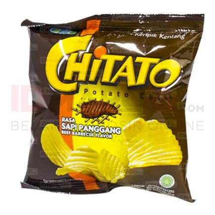
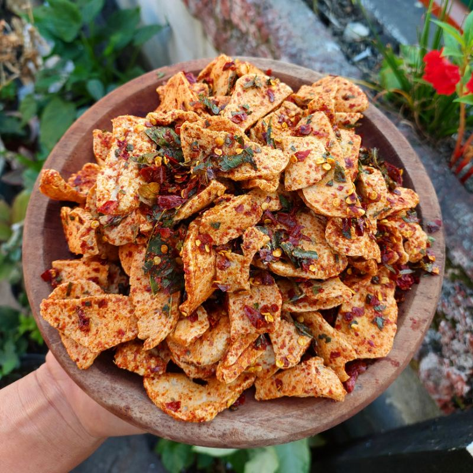
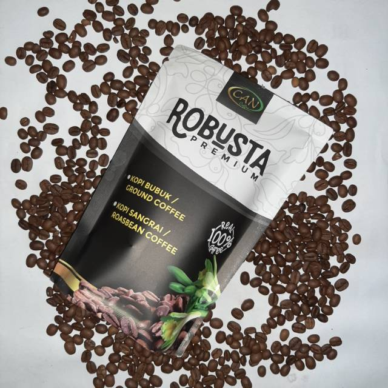
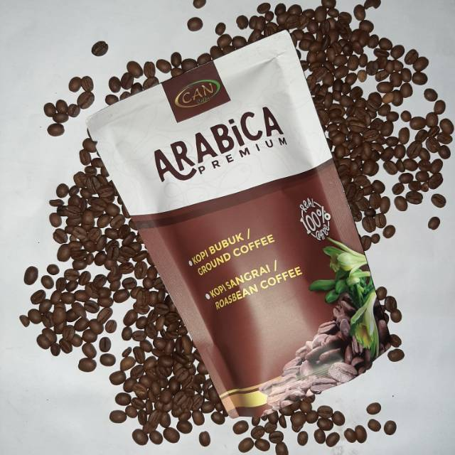

Chicken Snack ini merupakan produk cemilan ala rumahan yang tentu saja berbahan dasar ayam. Cemilan ala rumahan ini memiliki berbagai rasa loh, seperti rasa original, balado/pedas, manis, dan asin.
Chitato adalah cemilan yang berbahan dasar kentang. Chitato memiliki banyak varian rasa seperti Sapi Panggang, Ayam Bumbu, Rasa Asi/Original, Rasa Keju Supreme, Rasa Sapi Bumbu Bakar, Rasa Ayam Barbekiu. Cukup banyak varian rasanya bukan? selain itu harga makanan ringan ini lumayan terjangkau untuk Chitato versi jumbo cuman Rp 18.000 an.
hayoo siapa yang demen banget sama cemilan yang pedes nih, kali ini mimin saranin cobain deh basreng atau baso goreng ala Dapur Bunda. Harga cemilan ini pun cukup murah meriah lo gengs, hanya dibanderol dengan harga 12.000 rupiah/100 gram. Cemilan ini pun beragam rasanya loh, ada rasa pedas manis, pedas asin, sedang asin, sedang manis, dan rasa original.
Para pencinta kopi pasti udah tau kalau terdapat berbagai jenis kopi yang dijual di pasaran. Ada kopi yang dibagi sesuai takarannya, cara penyeduhannya, dan juga rasanya. Tapi, kayaknya kamu juga perlu tau variasi yang paling mendasar banget, yaitu berdasarkan jenis kopinya. kali ini mimin bawain produk kopi jenis Robusta nih, bagi penikmat robusta ayo tunggu apalagi segera pesan dan rasakan karakter khas Robusta terbaik di Indonesia. Produk ini ditawarkan dengan harga kopi bubuk robusta murah yaitu Rp 52.000 saja untuk kemasan 200g.
Dibandingkan dengan berbagai jenis kopi lainnya, kopi arabika termasuk kopi yang memiliki nilai tertinggi di seluruh dunia. Hal ini disebabkan oleh cita rasa berbeda yang dihasilkan oleh setiap varietasnya sehingga para pencinta kopi punya banyak pilihan rasa. Selain cita rasa yang khas dari kopi arabika berupa kekentalan (body) yang ringan dan tingkat keasaman yang lebih tinggi dibandingkan kopi yang lainya, kopi arabika juga memiliki profil aroma yang sangat unik, di antaranya ada yang memiliki aroma khas menyerupai lemon (lemony), aroma menyerupai madu (honeyed) dan bahkan aroma khas menyerupai cokelat (chocolaty). Aroma yang khas pada hasil seduhan memang dapat memberikan nilai tambah terhadap produk cita rasa kopi Arabika yang dihasilkan. Tunggu apa lagi ayo buat produk kopi berkualitas dunia ini ada di rumahmu. Kopi bubuk ini dibanderol dengan harga mulai dari Rp 180.000/1 Kg.